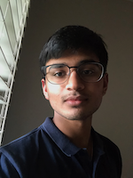

Ishaan Chitre

Objective
Hardworker and quick learner seeking an entry-level position
as a software developer while attending the University of Georgia
as a freshman.
Education
- Northview High School • 4.0 GPA
- University of Georgia • Computer Science • 4.0 GPA
- Expected Graduation Date: May 2027
Skills
- Fluent in languages such as:
- Experienced programmer in languages such as:
- Created several games using Unity's interface
Work/Volunteer Experience
- Teacher's Assistant • Best In Class • Dec 2021 - Oct 2022
- Assisted teachers in gradework
- Aided students grasp key concepts in Math and English
- Barista • Northview High School • Aug 2021 - May 2022
- Served coffee using a variety of different flavors
- Organized money
- Inspirit AI Scholar's Research Program
- Learned key concepts of Artificial Intelligence
- Collaborated on a project that built an AI model to detect
pneumonia in X-ray images of lungs
Extracurricular Activities
- Northview Robotics - FRC #1683 (2022-2023)
- Association of Computer Machinery (2023-Present)
- Society of Cyber Security (2023-Present)
- UGA Hacks (2023-Present)
Other